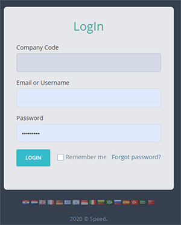

HOW TO SIGN-IN
Once you have signed up, you are no more required to go through all that process. For singing-in, all you need is your email and password that you have used while signing-up. Click the link below for sign-in now;

Once you have signed up, you are no more required to go through all that process. For singing-in, all you need is your email and password that you have used while signing-up. Click the link below for sign-in now;
